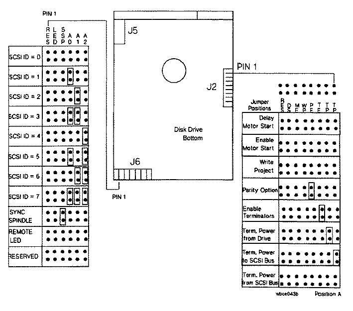

Caution
The drive options are selected on J2. The drive SCSI ID (address) is set on J6 (see floowing figure). Table 1 shows how the option pin-sets for the A3191A 3.5-inch hard disk drive should be set. Table 2provides a functional description of the J2 jumpers.
A pin-set is either shorted (with a jumper installed) or open (without a jumper). The J6 option settings are shown on the following Figure.
| Function | Connector | Pin-Set | Setting |
| Term Power from SCSI bus | J2 | 1-4* | Open |
| Term Power to SCSI bus | J2 | 1-2 | Jumpered |
| Term Power from Drive | J2 | 3-4 | Jumpered |
| Reserved | J2 | 5-6 | Open |
| Parity Enable | J2 | 7-8 | Jumpered |
| Write Protect | J2 | 9-10 | Open |
| Enable Motor Start | J2 | 11-12 | Open |
| Delay Motor Start | J2 | 13-14 | Open |
| Enable Terminators | J2 | 15-16 | Open |
| Reserved | J6 | 1-2 | Open |
| LED | J6 | 3-4 | Open |
| Reserved | J6 | 5-6 | Open |
| SCSI ID | J6 | 7-8, 9-10, 11-12 | 11-12, 9-11 Jumpered |
Table 1: Option Settings for A3191A 3.5-inch Hard Disk Drive

Figure ST12400N: Single-Ended Drive Connectors
| Jumper | Jumper | Jumper Function Description |
| TP(Pins 3-4) | TP(Pins 1-2) | |
| Off | Off | No terminator power is connected to drive terminators or SCSI bus I/O pin 26. |
| On | Off | Drive supplies its own terminator power only. |
| Off | On | Drive supplies power to I/O pin 26 of SCSI bus, none to internal terminators. |
| On | On | Drive supplies terminator power to itself (internal connection) and to I/O pin 26 of SCSI bus. |
| TP Position A | TP Position A | |
| On | This horizontally positioned jumper across the two TP positions nearest the PCB edge connects terminator power from SCSI bus I/O pin 26 to the drive's internal terminators. (For single-ended only.) Set if it is the last device on the bus. | |
| RES | RES | |
| Off | Reserved | |
| PE | PE | |
| On | Parity checking and parity error reporting by the drive is enabled. | |
| Off | Drive does not report result of parity checking to host. | |
| WP | WP | |
| On | Entire drive is write protected. | |
| Off | Drive is not write protected. | |
| DS | ME | |
| Off | Off | Spindle starts immediately after power up. |
| Off | On | Drive spindle does not start until Start unit command is received from host. |
| On | Off | Spindle Startup is delayed by SCSI ID times 12 seconds after power is applied, i.e. drive 0 spindle starts immediately when DC power is connected, drive 1 starts after 12-second delay, drive 2 after 24-second delay. |
| On | On | Drive spindle starts when Start Unit command is received from the ME jumper is installed. |
Table 2:Jumper Function Description